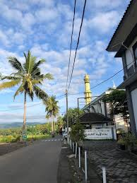
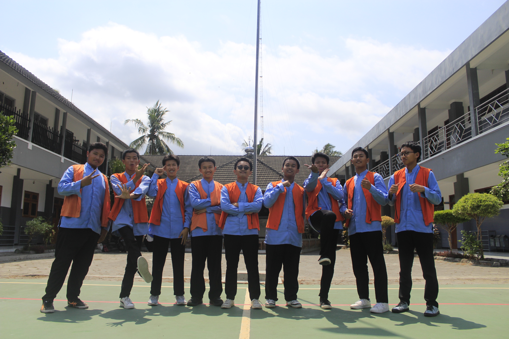

Mengenal lebih dalam Angkatan ke-19 Pondok Pesantren Bina Umat — Dari sebuah nama, tantangan ribuan hari, hingga persaudaraan yang abadi.

Awalnya, angkatan kami diberi nama "DERAYSER". Namun seiring berjalannya waktu dan pendalaman makna jati diri kami, nama tersebut diperbarui menjadi VICTOCATION.
Nama VICTOCATION berasal dari frasa "Victorious Vindication", yang membawa makna mendalam: "Mempertahankan Kemenangan". Kemenangan di sini bukan sekadar trofi duniawi, melainkan kemenangan dalam menaklukkan hawa nafsu, menjaga akhlak, menuntaskan hafalan, dan memegang teguh komitmen santri.
Sebanyak 79 santri terus istiqomah melangkah menghadapi ketatnya disiplin pondok dan berhasil menaklukkan seluruh pilar "Catur Sukses".
Prinsip utama Pondok Pesantren Bina Umat yang berhasil ditaklukkan oleh santri Victocation.
Menjunjung tinggi budi pekerti, adab kepada para guru, penghormatan kepada orang tua, serta kasih sayang kepada sesama.
Menjaga dan menghafal ayat-ayat suci Al-Qur'an dengan muroja'ah berkesinambungan sebagai lentera hati dan jalan hidup.
Membentuk kemandirian, kedisiplinan, integritas, serta jiwa kepemimpinan yang tangguh dan tahan banting.
Meraih pemahaman ilmu pengetahuan modern dan kepesantrenan untuk bekal masa depan yang gemilang.

Kehidupan pondok tak hanya tentang buku dan halaqah, tapi juga persahabatan sejati, guyonan malam, hingga cerita legendaris saat menghadapi mahkamah disiplin. Semua itu menjadi perekat persaudaraan yang tak akan pernah terlupakan seumur hidup.